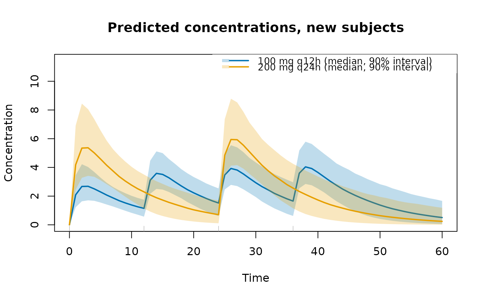

For a new regimen (predict(fit, regimen = ...)), draws the median
concentration and the prediction interval over time. For individual
predictions (predict(fit)), draws observed concentrations with each
subject's median and interval, one panel per subject.
Usage
# S3 method for class 'bpk_prediction'
plot(
x,
ids = NULL,
log = FALSE,
xlab = "Time",
ylab = "Concentration",
main = NULL,
compare = NULL,
labels = NULL,
...
)Arguments
- x
Output of
predict.bpk_fit().- ids
Subjects to show for individual predictions (default: the first 12).
- log
Logical; logarithmic concentration axis.
- xlab, ylab, main
Axis labels and title.
- compare
A second regimen prediction drawn in the same plot (orange).
- labels
Legend labels for
xandcompare.- ...
Passed to
graphics::plot().
Examples
# \donttest{
fit <- bpk_fit(pk_model("1cmt", "oral", iiv = c("CL", "V")), bpk_example,
chains = 2, iter = 1000, seed = 1)
#>
#> SAMPLING FOR MODEL 'popk' NOW (CHAIN 1).
#> Chain 1:
#> Chain 1: Gradient evaluation took 0.00016 seconds
#> Chain 1: 1000 transitions using 10 leapfrog steps per transition would take 1.6 seconds.
#> Chain 1: Adjust your expectations accordingly!
#> Chain 1:
#> Chain 1:
#> Chain 1: Iteration: 1 / 1000 [ 0%] (Warmup)
#> Chain 1: Iteration: 100 / 1000 [ 10%] (Warmup)
#> Chain 1: Iteration: 200 / 1000 [ 20%] (Warmup)
#> Chain 1: Iteration: 300 / 1000 [ 30%] (Warmup)
#> Chain 1: Iteration: 400 / 1000 [ 40%] (Warmup)
#> Chain 1: Iteration: 500 / 1000 [ 50%] (Warmup)
#> Chain 1: Iteration: 501 / 1000 [ 50%] (Sampling)
#> Chain 1: Iteration: 600 / 1000 [ 60%] (Sampling)
#> Chain 1: Iteration: 700 / 1000 [ 70%] (Sampling)
#> Chain 1: Iteration: 800 / 1000 [ 80%] (Sampling)
#> Chain 1: Iteration: 900 / 1000 [ 90%] (Sampling)
#> Chain 1: Iteration: 1000 / 1000 [100%] (Sampling)
#> Chain 1:
#> Chain 1: Elapsed Time: 3.749 seconds (Warm-up)
#> Chain 1: 1.66 seconds (Sampling)
#> Chain 1: 5.409 seconds (Total)
#> Chain 1:
#>
#> SAMPLING FOR MODEL 'popk' NOW (CHAIN 2).
#> Chain 2:
#> Chain 2: Gradient evaluation took 0.00013 seconds
#> Chain 2: 1000 transitions using 10 leapfrog steps per transition would take 1.3 seconds.
#> Chain 2: Adjust your expectations accordingly!
#> Chain 2:
#> Chain 2:
#> Chain 2: Iteration: 1 / 1000 [ 0%] (Warmup)
#> Chain 2: Iteration: 100 / 1000 [ 10%] (Warmup)
#> Chain 2: Iteration: 200 / 1000 [ 20%] (Warmup)
#> Chain 2: Iteration: 300 / 1000 [ 30%] (Warmup)
#> Chain 2: Iteration: 400 / 1000 [ 40%] (Warmup)
#> Chain 2: Iteration: 500 / 1000 [ 50%] (Warmup)
#> Chain 2: Iteration: 501 / 1000 [ 50%] (Sampling)
#> Chain 2: Iteration: 600 / 1000 [ 60%] (Sampling)
#> Chain 2: Iteration: 700 / 1000 [ 70%] (Sampling)
#> Chain 2: Iteration: 800 / 1000 [ 80%] (Sampling)
#> Chain 2: Iteration: 900 / 1000 [ 90%] (Sampling)
#> Chain 2: Iteration: 1000 / 1000 [100%] (Sampling)
#> Chain 2:
#> Chain 2: Elapsed Time: 4.037 seconds (Warm-up)
#> Chain 2: 1.713 seconds (Sampling)
#> Chain 2: 5.75 seconds (Total)
#> Chain 2:
#> Warning: Bulk Effective Samples Size (ESS) is too low, indicating posterior means and medians may be unreliable.
#> Running the chains for more iterations may help. See
#> https://mc-stan.org/misc/warnings.html#bulk-ess
#> Warning: Smallest effective sample size 232 (bulk) / 351 (tail) < 400.
a <- predict(fit, regimen = dose_regimen(100, ii = 12, n = 4), times = 0:60)
b <- predict(fit, regimen = dose_regimen(200, ii = 24, n = 2), times = 0:60)
plot(a, compare = b, labels = c("100 mg q12h", "200 mg q24h"))

# }